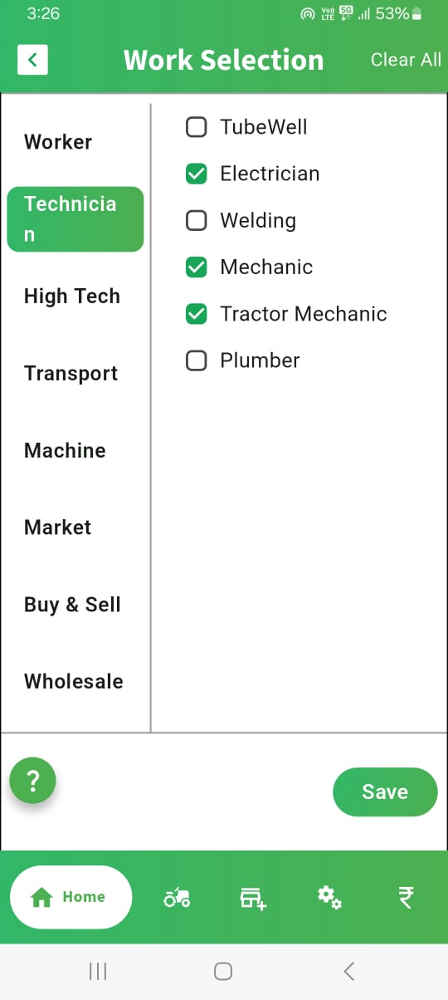
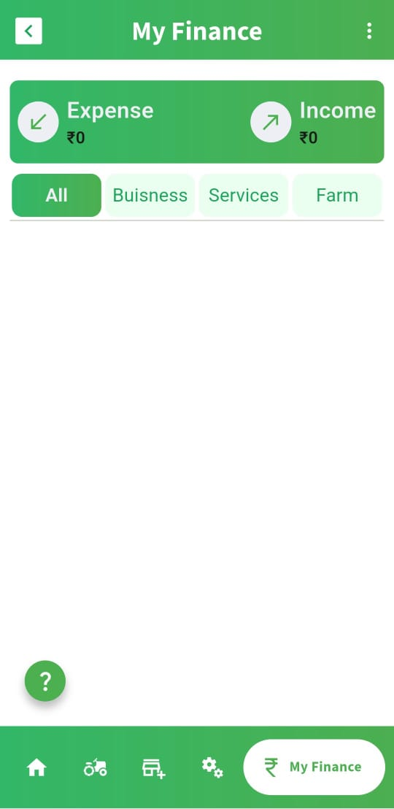

How FPO’S Are Transforming Farming With K2 App
Reimagining Everyday Farming for Smarter Collaboration
Farming Together: The New Digital Era
Across India, Farmer Producer Organizations (FPOs) are changing the game. By combining traditional wisdom with
modern technology, they’re creating stronger, more resilient farming communities.
And at the heart of this transformation is the K2 App—a digital solution designed to streamline every task, big or
small. From inventory and finance to service sharing and smart scheduling, K2 is helping FPOs farm
better—together.
One Farmer, Many Roles: Switch Profiles Seamlessly
Farming today is dynamic. A single person might be an:
- FPO member
- Individual farmer
- Local service provider
With K2’s Multi-Profile Login, users can easily switch between roles without logging out. This means faster
workflows and smoother operations, whether you’re managing group crops, booking a tractor, or offering services
to others.


“My Finance” – Crystal Clear Group Expenses
With My Finance, FPOs can take control of their economics like never before.
- Estimate per-acre costs ahead of planting
- Track actual vs expected expenses to stay on budget
- Monitor expenses by member, unit, or crop type
This makes it easier to spot problems early and ensure transparency for all
members.
Admin Power Tools – Run the FPO with Confidence
FPO leaders get a dedicated dashboard to manage operations effortlessly
- Add and manage members or farmer units
- Monitor overall performance with automated reports
- Access real-time data for smarter planning
Whether you're scaling operations or solving daily challenges, these tools put you in
command.

All-in-One Platform – From Field to Market
The real strength of the K2 App lies in its ability to connect the entire farming process—from sowing seeds to
selling produce. It supports everything from demand generation to delivery planning, while also providing live
updates on mandi (market) prices. Integration with IoT devices enables farmers to receive real-time data about
their fields, improving decision-making and resource management. With all these features combined, K2
becomes more than a farm management tool—it becomes the digital backbone of the FPO’s entire business
model.
Simple. Smart. Supportive.
The K2 App is not just another software tool; it is a complete support system designed to help farmers and
FPOs succeed together. By simplifying everyday operations, enhancing transparency, and encouraging
collective growth, K2 makes farming more manageable and more profitable. It’s a partner that understands the
challenges of modern agriculture and provides the tools needed to overcome them.
With K2, farming isn’t just smarter—it’s stronger, together.